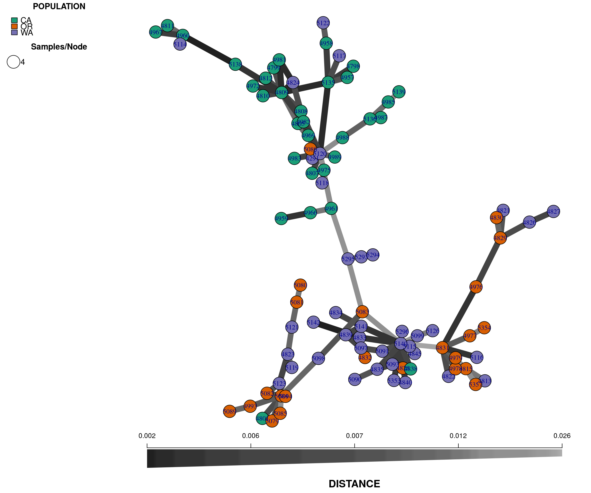
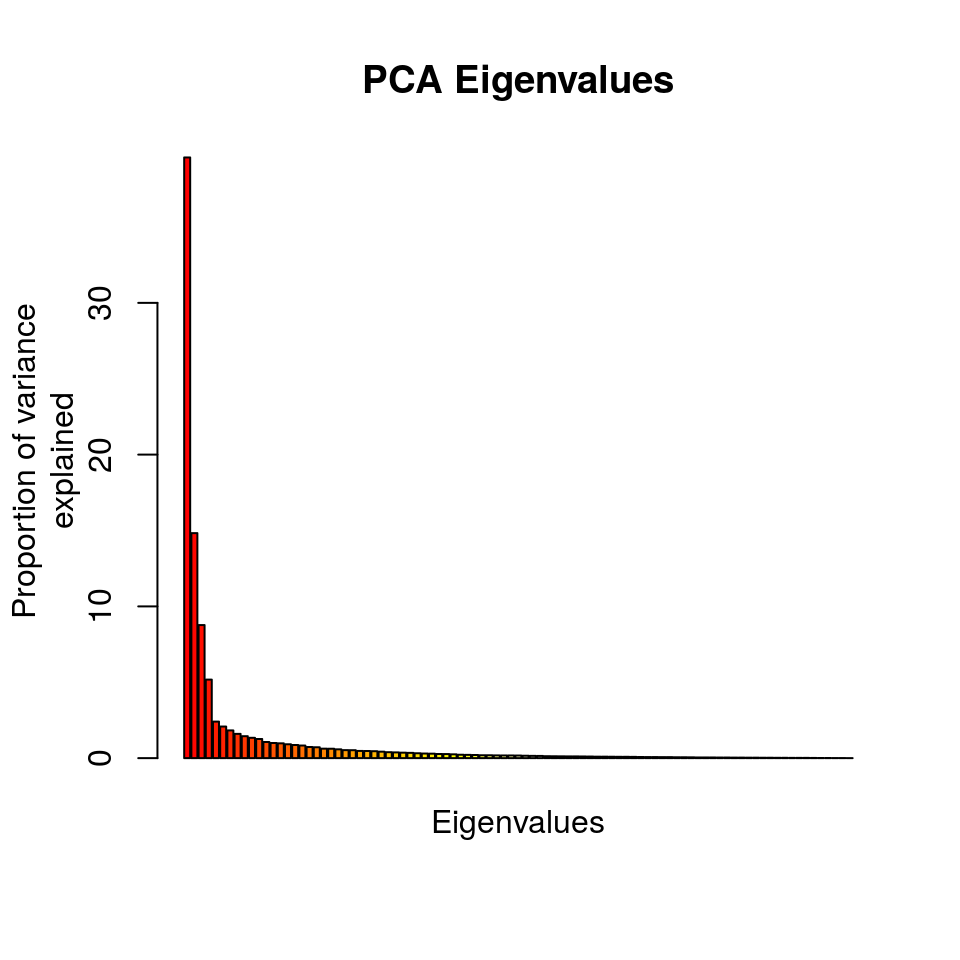
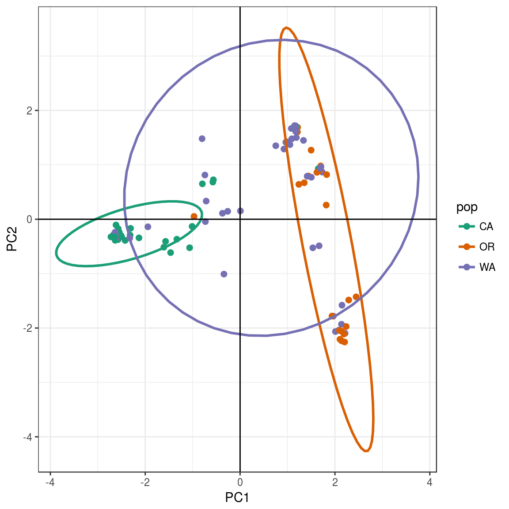
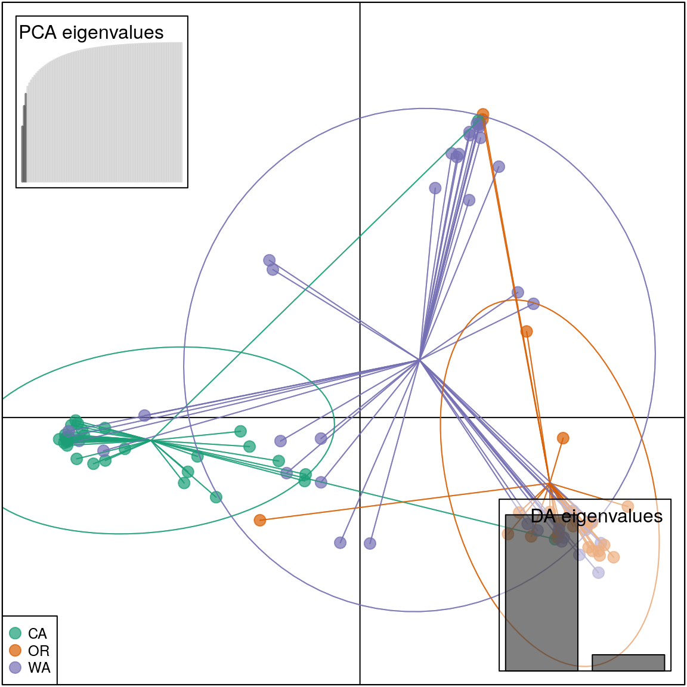
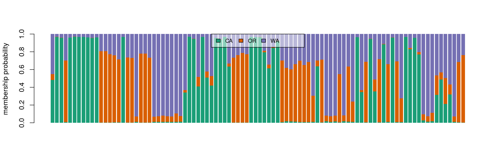
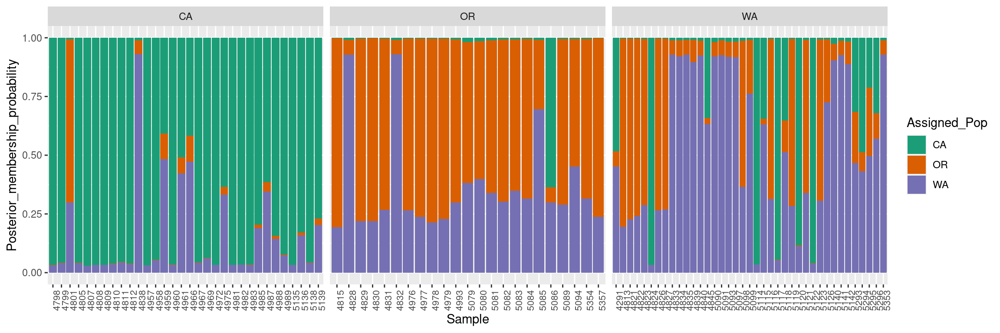
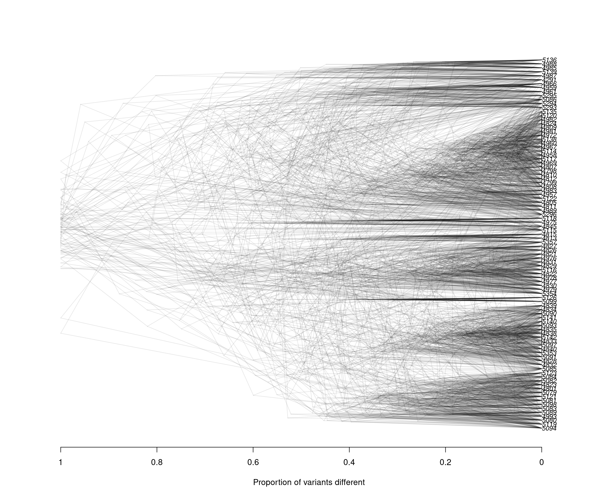
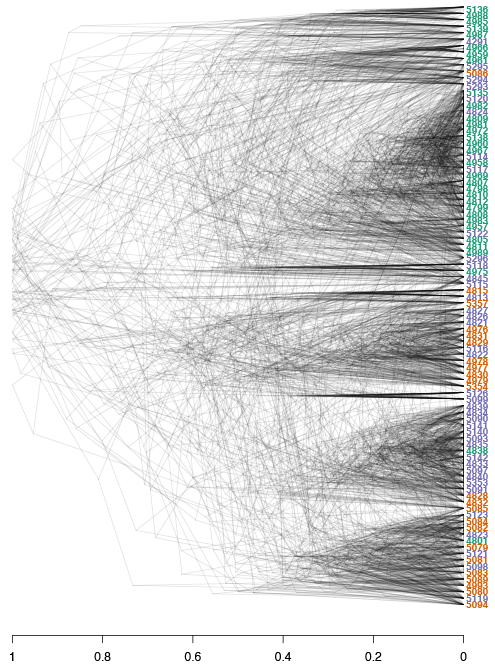

This tutorial focuses on large SNP data sets such as those obtained from genotyping-by-sequencing (GBS) for population genetic analysis in R. GBS is one of several techniques used to genotype populations using high throughput sequencing (HTS). In GBS, the genome is reduced in representation by using restriction enzymes, and then sequencing these products using HTS. For more information on these techniques we recommend reading @Baird:2008cq, @ROWE:2011ks, or @Poland:2012hs.
We will use a data set of 94 samples of the red raspberry pathogen Phytophthora rubi [@tabima2018populations]. This pathogen is diploid and a fungal like Oomycete. Populations were obtained by sampling individual pathogen strains from roots of infected red raspberry in the states of California (CA), Oregon (OR), and Washington (WA). A total of 94 samples of P. rubi were sequenced using the Illumina HiSeq 3000 technology with 150 bp paired end reads and a target insert size of 500 bp. Currently, there is little information about the population structure of P. rubi in the western USA. We are interested in studying the population structure of P. rubi populations in the western US. The VCF data for this population can be downloaded from: prubi_gbs.vcf.gz.
To obtain variant calls in form of VCF data, the FASTQ reads from HTS
were mapped to the reference genome of P. rubi [@tabima2018populations] using
bowtie2 [@langmead2012fast].
Variants were called using the GATK HaplotypeCaller [@mckenna2010genome]. This data was further
filtered in vcfR using read depths (DP) and mapping qualities
(MQ). Data was filtered as follows:
In addition to the VCF data, we have included the file
population_data.gbs.txt, a tab-delimited text file that
includes the name of the sample, country of origin, and the population
from where it was sampled. The file is available for download at: population_data.gbs.txt.
This link will likely open the data in a browser. Save the data onto
your hard-drive as an ASCII text file with the same name.
Let’s first load the libraries needed for analysis:
Make sure you are in the right folder with the downloaded files available. Some of these packages will print a message when they are loaded. Here we suppressed this information. When you load these packages, you may see more output than presented here.
Next, let’s open the VCF file using vcfR and check that we have 94 samples and 615 SNPs:
Once we’ve loaded the data into R, we can validate it by entering our object’s name in the console:
## ***** Object of Class vcfR *****
## 94 samples
## 321 CHROMs
## 615 variants
## Object size: 3.1 Mb
## 4.589 percent missing data
## ***** ***** *****
VCF data does not typically include any sort of population
information. We have to load this data separately from the
text-delimited file we downloaded above that includes the ID of samples
and the state where the samples were obtained from. Let’s load the
population_data.gbs.txt file into memory by using the
read.table() function:
We can now check that all the samples in the VCF and the population data frame are included:
## [1] TRUE
Remember, the first column for the vcfR object’s GT slot is
a FORMAT column, hence we removed it from the name
comparison step (i.e., by removing the first element in the column names
vector, the FORMAT column name). If we keep the
FORMAT column name we will not be able to compare between
the names of the samples in the vcfR object. All of the 94
samples in the population data frame loaded in the vcfR object
are in the same order.
The next step is to convert the data set into an object that is
usable by poppr, adegenet, or any of the other
population genetics packages in R. The vcfR package contains
multiple functions to convert data into other formats (see the
converting_data vignette of vcfR):
vignette('converting_data'). For our particular purpose we
want to convert the vcfR object into a genlight
object. We can use the vcfR2genlight function for this:
A warning is shown while transforming the object, telling us that
there are seven loci with more than two alleles. Many of the functions
we will be using in these tutorials have been written under the
assumption of a bi-allelic model. This bi-allelic model restricts all
loci to only two alleles in order to simplify some calculations. The
genlight object supports only loci with no more than two
alleles. The vcfR2genlight function subsets the data to
filter loci that are not bi-allelic, returning an object that contains
only loci with two alleles. The warning is to make sure we are aware
that this action has taken place.
Additionally, we are required to specify the ploidy of the organism
in order to calculate some population genetic metrics. P. rubi
is a diploid organism, so we will specify a ploidy of two. All
genlight objects have ploidy slots, in which the user can
specify the ploidy of each individual sample, or once for the entire
population. We can assume that every sample of P. rubi is
diploid and we will specify a ploidy of 2 for the entire population.
Note that while a genlight object can support individuals
of different ploidy, within each individual all loci must be of the same
ploidy.
Our biological question requires predetermined populations. We can
add them to the genlight object as part of the pop
(population) slot. In order to specify the population, we added the
State column from our pop.data data frame to
the pop slot of our genlight object:
We now end up with a genlight object of filtered VCF
data:
## /// GENLIGHT OBJECT /////////
##
## // 94 genotypes, 608 binary SNPs, size: 257.4 Kb
## 2607 (4.56 %) missing data
##
## // Basic content
## @gen: list of 94 SNPbin
## @ploidy: ploidy of each individual (range: 2-2)
##
## // Optional content
## @ind.names: 94 individual labels
## @loc.names: 608 locus labels
## @chromosome: factor storing chromosomes of the SNPs
## @position: integer storing positions of the SNPs
## @pop: population of each individual (group size range: 23-39)
## @other: a list containing: elements without names
Next, let’s get started with our first analyses.
Let’s create a pairwise genetic distance matrix for individuals or populations (i.e., groups of individuals).
To summarize, we can create a distance matrix from a genlight object
using dist():
Note, that we have not specified what the variable x is. We can find
documentation for this function with ?dist.
There are also functions to create distance matrices from genlight
objects that exist in other packages. The function
bitwise.dist() in the package poppr is an example.
We can find documentation for this function with
?poppr::bitwise.dist. Again, you need to know where to look
for this information or you may not find it. We can use this function as
follows.
Note, that the variable x has not yet been specified. Lastly, because
you can use as.matrix() on your genlight object, and most
distance algorithms can use this matrix as input, you can use this as an
intermediate step to create a matrix from your genlight object and pass
it to your distance algorithm of choice. Options include ade4,
vegdist() in vegan, or daisy() in
cluster. Note that it is up to you to determine which distance
metric is best for your particular analysis. A number of options
therefore exist for creating distance matrices from genlight
objects.
Let’s start our analysis by building a genetic distance tree that represents the genetic relatedness of the samples. The similarity between samples and groups of samples is represented by the branch length. In most trees, the branch length is represented by the number of substitutions per site for a cluster or a sample. When samples are very similar, they are grouped by short branches. The longer the branch, the higher the number of substitutions and the higher the genetic distance is between samples or clusters.
For this tutorial, we will build a distance tree to obtain an initial assessment of the population structure of the P. rubi samples in the western US. We will reconstruct a distance tree based on the UPGMA algorithm, with 100 bootstrap replicates to assess branch support:
tree <- aboot(gl.rubi, tree = "upgma", distance = bitwise.dist, sample = 100, showtree = F, cutoff = 50, quiet = T)Next, we will color and plot the tips of the tree based on the
population of origin of the samples, and draw conclusions from what we
observe in the tree using the heat_tree() function from
heattree [@foster2026heattree]:
cols <- brewer.pal(n = nPop(gl.rubi), name = "Dark2")
heat_tree(tree = tree, metadata = pop.data, aesthetics = c(tipLabelColor = 'State'), height = 800)We observe that samples do not cluster exclusively by region (e.g., CA, OR and WA). Instead, we observe a cluster with mainly CA samples (teal), but also containing a few WA (purple) and two OR (green) samples. The second, lower cluster contains predominantly samples for OR (green) and WA (purple).
Another useful independent analysis to visualize population structure is a minimum spanning network (MSN). MSN clusters multilocus genotypes (MLG) by genetic distances between them. Each MLG is a node, and the genetic distance is represented by the edges. In high throughput sequencing studies, where marker density is high, each sample typically consists of a unique genotype.
The nodes will be connected by the minimum distance between samples. This allows for reticulations (e.g., a network connecting nodes with identical genetic distances; contrast this with a tree where pairwise nodes are only connected to one other node with the shortest distances, even if several nodes share the same minimum genetic distance).
To reconstruct a MSN we require a genlight object and a
distance matrix that represents the genetic distance between samples. To
calculate this distance we will use the bitwise.dist()
function from poppr. The bitwise.dist()
function is a fast method to calculate the number of allelic differences
between two samples:
library(igraph)
rubi.dist <- bitwise.dist(gl.rubi)
rubi.msn <- poppr.msn(gl.rubi, rubi.dist, showplot = FALSE, include.ties = T)
node.size <- rep(2, times = nInd(gl.rubi))
names(node.size) <- indNames(gl.rubi)
vertex.attributes(rubi.msn$graph)$size <- node.size
set.seed(9)
plot_poppr_msn(gl.rubi, rubi.msn , palette = brewer.pal(n = nPop(gl.rubi), name = "Dark2"), gadj = 70)
Note that we have used the command set.seed(9) to set a
random number seed. Because there is some stochasticity in the
presentation of a MSN, this is required to reproduce the exact same
plot. In practice, you should explore using different seeds to obtain
different representations of the same data.
The plot is similar to the tree we rendered above and shows that the populations are not fully differentiated geographically. There are two main groups in the plot, one that clusters the OR samples with some WA samples (upper left), and a second that clusters the CA samples with some WA samples (lower right). This provides additional evidence for the two clusters observed in the genetic distance tree. Next, we perform a principal components analysis.
A principal components analysis (PCA) converts the observed SNP data
into a set of values of linearly uncorrelated variables called
principal components that summarize the variation between
samples. We can perform a PCA on our genlight object by using the
glPCA function.
rubi.pca <- glPca(gl.rubi, nf = 3)
barplot(100*rubi.pca$eig/sum(rubi.pca$eig), col = heat.colors(50), main="PCA Eigenvalues")
title(ylab="Percent of variance\nexplained", line = 2)
title(xlab="Eigenvalues", line = 1)
The barplot indicates that we will need to only retain the first 3
PCAs, which cumulatively explain explain 63.183 percent of
the variance of the data.
To view the results of the PCA we can use the package
ggplot2. We need to convert the data frame that contains
the principal components (rubi.pca$scores) into the new
object rubi.pca.scores. In addition, we will add the
population values as a new column in our rubi.pca.scores
object, in order to be able to color samples by population.
ggplot2 will plot the PCA, color the samples by
population, and create ellipses that include 95% of the data for each
the population:
rubi.pca.scores <- as.data.frame(rubi.pca$scores)
rubi.pca.scores$pop <- pop(gl.rubi)
library(ggplot2)
set.seed(9)
p <- ggplot(rubi.pca.scores, aes(x=PC1, y=PC2, colour=pop))
p <- p + geom_point(size=2)
p <- p + stat_ellipse(level = 0.95, size = 1)
p <- p + scale_color_manual(values = cols)
p <- p + geom_hline(yintercept = 0)
p <- p + geom_vline(xintercept = 0)
p <- p + theme_bw()
p
The PCA produces a pattern similar our previous results. We observe that PC1 distinguishes samples from WA and OR, (right) from a cluster predominantly made up of CA and WA samples (left). The CA samples form a tight cluster with a narrow ellipse in green.
We can further explore population assignments using a discriminant analysis of principal components (DAPC).
The DAPC is a multivariate statistical approach that uses populations defined a priori to maximize the variance among populations in the sample by partitioning it into between-population and within-population components. DAPC thus maximizes the discrimination between groups. DAPC is explained in depth in the DAPC chapter on Part II of this tutorial and in the DAPC adegenet vignette.
DAPC requires a genlight object with populations defined a
priori. We already have this genlight object from the
above steps. Usually, we use the number of principal components and
discriminant axes that maximize the variance between populations; but
our objective here is to calculate the population assignments based on
the results of the PCA. We will use the same parameters as in the PCA to
make the results comparable between both methods. These parameters
(n.pca=3 and n.da=2) will be used to
reconstruct the DAPC, obtain the assignment of the samples to each
population, and suggest admixture between geographical states in the
western USA.
To confirm that the DAPC is similar to the PCA we can plot the data in a scatter plot.
scatter(pnw.dapc, col = cols, cex = 2, legend = TRUE, clabel = F, posi.leg = "bottomleft", scree.pca = TRUE,
posi.pca = "topleft", cleg = 0.75)
We see that the results of the PCA and DAPC are very similar. The
DAPC object we created includes the population membership probability
for each sample to each of the predetermined populations. To visualize
the posterior assignments of each sample, we use a composite stacked bar
plot (compoplot). A compoplot illustrates the
probability of population membership on the y-axis. Each sample is a bin
on the x-axis, and the assigned probability of population membership is
shown as a stacked bar chart with clusters or populations shown in
color.
#compoplot(pnw.dapc,col = function(x) cols, posi = 'top')
compoplot(pnw.dapc,col = cols, posi = 'top')
These plots are hard to interpret and we will thus separate the
samples by population.
ggplot2 can be used to reconstruct these plots, but we need
to convert the data into a ggplot2 friendly object. We will
extract the DAPC calculated population membership assignments
(pnw.dapc$posterior) into a new data frame
(dapc.results), include the original population assignment
as a new column in the data frame (dapc.results$pop), and
add a column that includes the sample names
(dapc.results$indNames).
dapc.results <- as.data.frame(pnw.dapc$posterior)
dapc.results$pop <- pop(gl.rubi)
dapc.results$indNames <- rownames(dapc.results)ggplot2 has specific requirements for the structure of
the data frame format, as it requires each observation in rows, and all
different values of these observations in columns (i.e., a long format
data frame). To transform the data frame we use
pivot_longer from the package tidyr.
# library(reshape2)
# dapc.results <- melt(dapc.results)
library(tidyr)
dapc.results <- pivot_longer(dapc.results, -c(pop, indNames))We have now reorganized the data frame into the required format, where each membership probability observation for a given population is a row with the sample name, original population, and assigned population as columns.
## # A tibble: 6 × 4
## pop indNames name value
## <fct> <chr> <chr> <dbl>
## 1 WA 4291 CA 0.483
## 2 WA 4291 OR 0.0653
## 3 WA 4291 WA 0.452
## 4 CA 4798 CA 0.967
## 5 CA 4798 OR 0.000938
## 6 CA 4798 WA 0.0317
Then, we rename the columns into more familiar terms:
colnames(dapc.results) <- c("Original_Pop","Sample","Assigned_Pop","Posterior_membership_probability")ggplot2 will plot the dapc.results data
frame we reorganized using pivot_longer, using the samples
on the X-axis and membership probabilities on the Y-axis. The fill color
will indicate the original population assignments. Each facet represents
the original population assignment for each sample:
p <- ggplot(dapc.results, aes(x=Sample, y=Posterior_membership_probability, fill=Assigned_Pop))
p <- p + geom_bar(stat='identity')
p <- p + scale_fill_manual(values = cols)
p <- p + facet_grid(~Original_Pop, scales = "free")
p <- p + theme(axis.text.x = element_text(angle = 90, hjust = 1, size = 8))
p
This bar plot shows us a more organized perspective of our data set by contrasting the population membership probability assignments against their original populations.
In general, the composite plot shows that all western states of the USA exhibit admixture with other states, with WA showing the most admixture.
One of the main limitations encountered when performing a population genetic analysis using large SNP data sets is the size of the data set. Large datasets require large amounts of computing resources, presenting a challenge to individuals who are not familiar with managing their computing resources. These large data sets are becoming very common thanks to the current developments on genomics and computational biology, where instead on performing analyses on one or a few loci current analyses focus in entire genomes of large populations.
GBS data sets are good examples of large data sets used in population genetics. The large number of samples, and the high number of variants obtained, can generate gigabytes of data that are difficult to analyse with a desktop computer. Many of the variants obtained from GBS analyses are removed via filtering (for a deeper explanation of filtering genomic variant data review the quality control chapter of this workshop). Nonetheless, these filtered data sets may have hundreds to thousands of variants, making their analysis very tedious for the average user.
One way of solving the issues of dealing with large genomic data sets is to subset the data set to smaller groups of random variants across the genome. Multiple subsets of a data set can be analysed in order to determine if the different subsets reveal similar overall results. These independent analyses will provide support to the results, while reducing the effective computational time of the analysis.
We will illustrate the process of subsetting datasets using the P. rubi GBS data. As a reminder, this dataset has 138 samples spanning 615 variants across the genome. The number of variants in this analysis does not reflect a real large data set, but we will use it as it will allow us to compare the results of the subsets against the total analysis. This comparison will demonstrate that subsets of large data sets can provide information that is similar to the total data set while reducing the computational intensity of the calculations.
In this example we will show how to subset the data to 200 random
variants across the genome. We will use the rubi.VCF object
we created at the beginning of this tutorial. To subset, we use square
brackets to select portions of an object we would like to retain. The
square brackets represent the values to be subset from the original data
set, for example: if we have a vector with the four first letters of the
alphabet (“A”,“B”,“C”,“D”), and we want to subset only the first two
occurrences we can do this:
## [1] "A" "B"
We see that when we use the alphabet[c(1,2)] we are
calling the first two occurrences of the vector of interest. We can do
something very similar with the vcfR objects from the
vcfR package. Lets say we are interested only in the first
10 variants of our rubi.VCF, we can do something
similar:
## ***** Object of Class vcfR *****
## 94 samples
## 321 CHROMs
## 615 variants
## Object size: 3.1 Mb
## 4.589 percent missing data
## ***** ***** *****
## ***** Object of Class vcfR *****
## 94 samples
## 4 CHROMs
## 10 variants
## Object size: 1 Mb
## 3.83 percent missing data
## ***** ***** *****
We can see that the second object only has 10 variants. If we look at
the summary in detail, we observe that the original sample has 312
chromosomes/scaffolds, 615 variants and a size of 2.9 Mb. The subset
object, on the other hand, only has 4 chromosomes/scaffolds, 10 variants
and a size of 0.9 Mb. Both objects have the same number of samples. This
is a good example of how to subset a vcfR object. However,
we want to obtain a subset of 200 random variants. If
we do rubi.VCF[c(1:200)] we will only obtain the first 200
variants. These 200 variants will always be the same, and we will have
no real replication to determine the strength of our approach.
One way to solve this problem is to generate a random string of 200
numbers that range from 1 to the total number of variants of the object.
The R statistical environment has the function sample().
The function sample() generates a random vector of elements
(i.e. numbers or elements from a vector). We can use
sample() to generate the random vector of 200 numbers that
range from 1 to the total number of variants of the object. The total
number of variants in a vcfR object is equivalent to the
number of rows in the vcfR object. We will use the nrow()
method for our vcfR object to obtain the maximum range of
values to subset our data set:
subset.1 <- sample(size = 200, x= c(1:nrow(rubi.VCF)))
subset.2 <- sample(size = 200, x= c(1:nrow(rubi.VCF)))We have to check that the subsets are not identical. We can confirm
this by using the function identical().
## [1] FALSE
We can see that the vectors have different numbers. The results from
identical() do not mean that every number in the vector is
different. It just means that some of the values in the vectors are
different, but each vector can also share some numbers with the other
vector.
Now we know how to generate a vector of 200 random numbers from 1 to
the length of the vcfR object. We will use these vectors to
subset the rubi.VCF object. To subset the vcfR
object we execute code very similar to the one shown in the subset
example. The main difference is that now we can use the
subset.1 and subset.2 objects as the subset
indices:
## ***** Object of Class vcfR *****
## 94 samples
## 156 CHROMs
## 200 variants
## Object size: 1.8 Mb
## 4.734 percent missing data
## ***** ***** *****
## ***** Object of Class vcfR *****
## 94 samples
## 145 CHROMs
## 200 variants
## Object size: 1.8 Mb
## 4.872 percent missing data
## ***** ***** *****
When the two rubi.VCF.sub objects are compared we can
see that the number of variants (200) and the number of samples (94) are
identical. This indicates that the subset was performed correctly.
Observe that the chromosome number and percentage of missing data are
different. These different numbers show that each subset has selected
different variants.
Now we can generate subsets of random variants. We will extend the subset example by creating 50 subsets of 200 variants each, then we will then reconstruct a UPGMA distance tree per subset and overlay all of the reconstructed trees. This tree overlay will allow us to determine if the subsets support our hypothesis of low population differentiation, or if we have unique tree clusters for different subsets. You, the user, don’t have to execute this example, as it is for illustrative purposes only.
# Creating a list object to save our subsets in.
rubi.variant.subset <- vector(mode = "list", length = 50)
# Using a for loop to generate 50 subsets of 200 random variants from the rubi.VCF vcfR object.
for (i in 1:50){
rubi.variant.subset[[i]] <- rubi.VCF[sample(size = 200, x= c(1:nrow(rubi.VCF)))]
}
# Checking we have 50 vcfR objects:
length(rubi.variant.subset)## [1] 50
## [[1]]
## ***** Object of Class vcfR *****
## 94 samples
## 146 CHROMs
## 200 variants
## Object size: 1.8 Mb
## 4.564 percent missing data
## ***** ***** *****
##
## [[2]]
## ***** Object of Class vcfR *****
## 94 samples
## 139 CHROMs
## 200 variants
## Object size: 1.8 Mb
## 4.676 percent missing data
## ***** ***** *****
# Creating the GenLight object
rubi.gl.subset <- lapply(rubi.variant.subset, function (x) suppressWarnings(vcfR2genlight(x)))
for (i in 1:length(rubi.gl.subset)){
ploidy(rubi.gl.subset[[i]]) <- 2
}
# Creating a simple UPGMA tree per object
library(phangorn)
rubi.trees <- lapply(rubi.gl.subset, function (x) upgma(bitwise.dist(x)))
class(rubi.trees) <- "multiPhylo"
# Overlapping the trees
densiTree(rubi.trees, consensus = tree, scaleX = T, show.tip.label = F, alpha = 0.1)
title(xlab = "Proportion of variants different")
We can observe that the results between both subsets are very similar: Clustering between samples from WA and OR, clustering between some samples of CA and WA, and a small number of samples of CA and OR clustering. These results reflect similar patterns to what we have observed with the full data set, indicating that our subset strategy is a suitable approach to analyse our P. rubi GBS data set
Since the DensiTree function does not currently allow us to color the tip labels we will have to color them by hand in a graphics software outside of R. This is the final result:

The densiTree reconstruction shows a very similar overall topology to the initial consensus tree: We see 6/7 major clades, and each of the clades is comprised of samples from different populations, indicating low geographic population structure. Furthermore, we observe how multiple subsets can result in similar patterns to the overall data. Subsetting large genomic variants is an easy, time-efficient and computationally smart method.
We were able to determine that the western states of P. rubi do not have population structure based on geographical locations. The results showed that the CA population was less diverse and had a lower degree of admixture than either the WA or OR populations. We can conclude that the geographical locations do not reflect the population structure of samples of P. rubi in the western USA, where the results suggested that different states shared genotypes across the entire geographic gradient resulting in one, panmictic and admixed population of P. rubi.
1) We frequently subset our data for various
reasons. How could we go about subsetting our vcfR object
to the isolates from California and Oregon.
2) Can you also subset the genind object?
3) Can you perform PCA on these two populations?
4) Can you plot the PCA?
How important is the Washington isolates in our understanding of West coast Phytophthora rubi populations?